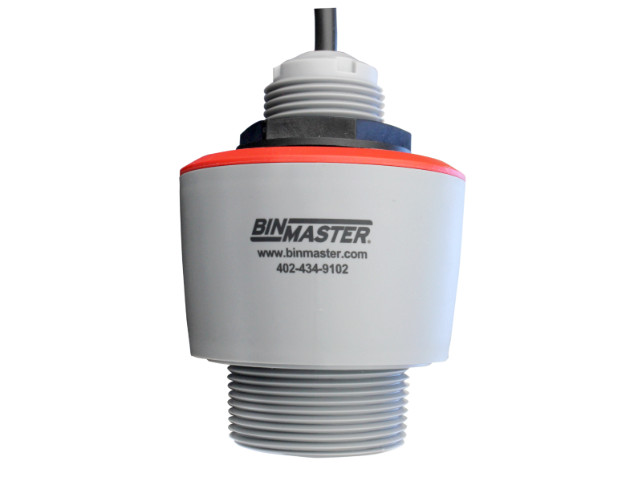
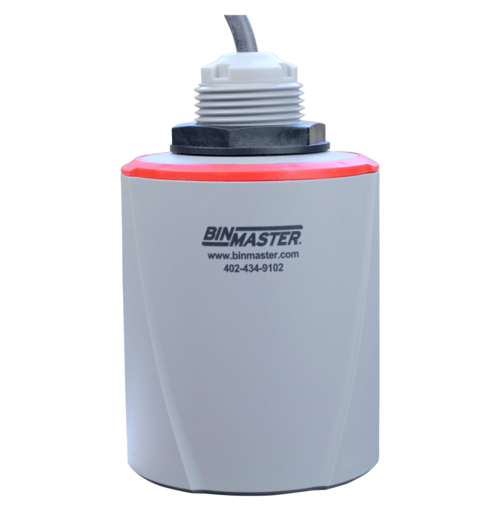

Tap Rotate
Turn sideways to practice on the meter.
This is the setup guide for BinMaster’s DPM-500. Press “Get Started” to Continue.
Privacy
Have you wired your DPM-500?
Confirm wiring before setup. Incorrect connections can prevent the meter from reading your sensor.
Choose your wiring scheme
Open the diagram that matches your sensor and installation. Wire the DPM-500 before continuing setup.


Enter the numbers for your bin
That's your calculated reading. Setup is working.
Follow along on-site to get the same result.